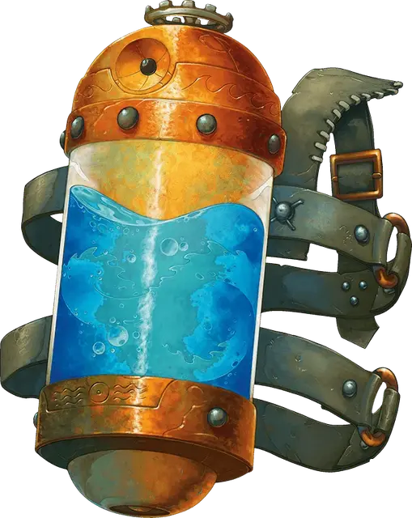

Резервуар с аномалией
Weird Tank
Чудесный предмет, редкий (требуется настройка)

Рекомендованная стоимость 501-5 000 зм
Резервуар с аномалией — это сосуд объёмом 10 галлонов (около 38 литров), сделанный из дутого стекла c крышками из чеканной бронзы. К нему приделаны ремни из жёсткой кожи, благодаря чему его можно носить на спине как рюкзак. Внутри резервуара содержится водная аномалия [water weird]. Пока вы носите резервуар, вы можете Действием открыть его, позволив ей выбраться наружу. Она связана с резервуаром и будет действовать сразу после вас в порядке инициативы.
Пока вы носите резервуар, вы можете телепатически отдавать команды водной аномалии (действие не требуется). Вы можете действием закрыть резервуар, но только если до этого приказали аномалии вернуться в резервуар, иначе она погибнет.
Если водная аномалия умирает, резервуар теряет магические свойства до тех пор, пока будет перезаряжен внутри элементального узла воды.
Перезарядка занимает 24 часа, и после неё внутри резервуара появляется новая водная аномалия.
Резервуар имеет КД 15, 50 хитов, уязвимость к дробящему урону и иммунитет к яду и урону психической энергией. Если хиты резервуара опустить до 0, он уничтожается вместе с водной аномалией внутри него.